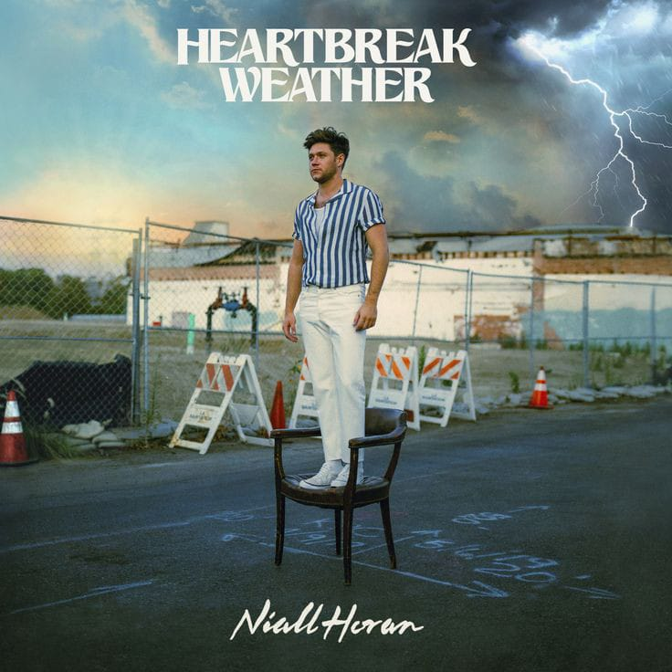
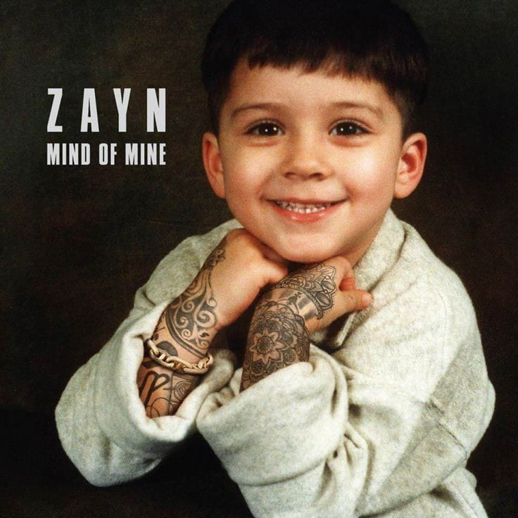
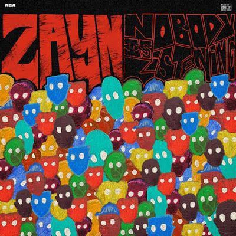
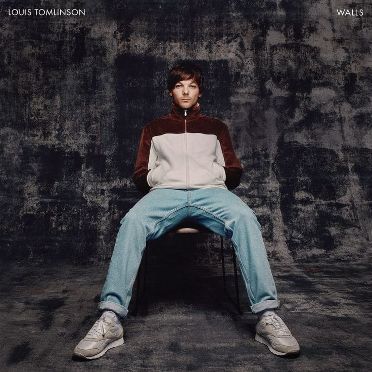

Niall James Horan kelahiran 13 September 1993 (kini berusia 30 tahun) adalah seorang penyanyi dan penulis lagu berkebangsaan Irlandia. Dia mulai terkenal sejak menjadi anggota grup personel one direction. Pada tahun 2010, Niall Horan mengikuti audisi sebagai artis solo untuk ajang menyanyi Inggris the x factor. Setelah tereliminasi sebagai peserta solo, Horan bergabung dengan empat peserta lain untuk membentuk One Direction. Grup ini telah merilis lima album sukses, mengadakan empat tur dunia, dan memenangkan banyak penghargaan. Setelah grup ini hiatus pada tahun 2015, Niall Horan menandatangani kontrak sebagai artis solo dengan Capital Records.
| Solo Albums yang diciptakan oleh Niall Horan | |
|---|---|
| Flicker (2017) | |
| Heartbreak Weather (2020) |  |
| The Show (2023) |  |
Zayn Javvad Malik atau kerap disapa zayn malik, ia lahir pada 12 Januari 1993 di Bradford, Inggris. Ayahnya bernama Yasser yang berdarah Inggris-Pakistan sedangkan Ibunya, Tricia Malik berdarah Inggris. Ia memiliki tiga saudara perempuan, yaitu Doniya, Waliyha and Safaa. Dia mulai terkenal sejak menjadi anggota grup personel one direction. Awal perjalan karirnya zayn mengikuti audisi the x factor. Walaupun dalam proses audisinya memang tidak terlalu menonjol, namun zayn berhasil lolos. Dari program tersebut, akhirnya zayn bergabung menjadi salah satu boyband one direction. Awalnya zayn dikenal dikenal sebagai sosok yang pemalu. Dia sering tidak percaya diri dengan penampilannya dan bersembunyi di belakang panggung saat audisi the x factor. Karena itu, zayn dak begitu dikenal banyak orang. Namun saat simon cowell membujuknya untuk tampil maksimal di atas panggung, ribuan mata pun terpukau akan gayanya. Tak lama kemudian, nama zayn malik sudah menjadi perbincangan seru di sebuah situs micro-blogging. Pada akhirnya zayn memutuskan untuk mengundurkan diri dan menandatangani kontrak sebagai artis solo dengan RCA Records.
| Solo Albums yang diciptakan oleh Zayn Malik | |
|---|---|
| Mind Of Mine (2016) |  |
| Icarus Falls (2018) |  |
| Nobody is Listening (2021) |  |

Harry Edward Styles lahir pada tanggal 1 Februari 1994, di Evesham, Worcestershire Inggris. Ketika masih bersekolah diketahui bahwa harry styles pernah menghabiskan waktunya bekerja di toko roti W. Mandeville. Dia mulai terkenal sejak menjadi anggota grup personel one direction. Saat dirinya masih berusia enam belas tahun, Harry Styles mengikuti audisi X Factor yang saat itu memasuki musim ketujuh tahun 2010, dan akhirnya audisi tersebut mengantarkan harry bergabung bersama one direction. Harry menjadi anggota termuda diantara personel lainnya. Ketika one direction resmi dikabarkan bubar, akhirnya harry styles memutuskan menandatangani kontrak sebagai artis solo dengan Columbia Records. Selain menjadi seorang musisi ternama, harry kerap menjadi aktor di beberapa film seperti don’t worry darling, eternals, my policeman dll.
| Solo Albums yang diciptakan oleh Harry Styles | |
|---|---|
| Harry Styles (2017) |  |
| Fine Line (2019) |  |
| Harry's House (2022) |  |
Liam James Payne, kelahiran 29 Agustus 1993 (kini berusia 30 tahun) di wolverhampton, west midlands. Ia adalah putra dari Karen, seorang perawat anak-anak, dan Geoff Payne, seorang fitter. Liam payne adalah seorang penyanyi dan penulis lagu berkebangsaan Inggris. Liam Payne membuat debutnya sebagai seorang penyanyi ketika mengikuti audisi dari serial televisi Inggris yakni the x factor pada tahun 2008. Setelah dieliminasi sebagai peserta solo, dia mengikuti audisi lagi pada tahun 2010 dan dimasukkan ke dalam sebuah grup bersama empat kontestan lain untuk membentuk One Direction. Setelah grup ini hiatus pada tahun 2015, Liam Payne menandatangani kontrak sebagai artis solo dengan Republic Records di Amerika Utara pada tahun 2017.
| Solo Albums yang diciptakan oleh Liam Payne | |
|---|---|
| LP1 (2019) |
Louis William Tomlison, kelahiran 24 Desember 1991 di Doncaster, south yorkshire, Inggris dengan nama Louis Troy Austin. Ia adalah sulung dari 6 bersaudara yang lahir dari pasangan Johannah Poulston dan Troy Austin. Sejak orang tuanya bercerai dan menikah lagi dengan pria bernama Mark Tomlinson, ia mewarisi nama belakang ayah tirinya. Lima adik perempuannya bernama Georgia Austin, Charlotte, Félicité, Daisy dan Pheobe Tomlinson. Louis menyelesaikan pendidikannya di Hall Cross School, Hayfield School dan sebuah sekolah akting di Barnsley. Semasa sekolah ia pernah bekerja di toko mainan Toys R Us dan sebagai waiter di stadion Doncaster Rovers . Louis pertama kali mengikuti audisi The X Factor pada tahun 2009 namun tidak lolos audisi tahap awal. Setelah memenangkan The X Factor pada tahun 2010, akhirnya mengantarkan louis menjadi anggota boyband one direction. Setelah grup ini hiatus pada tahun 2015, Louis menandatangani kontrak sebagai artis solo dengan Arista Records.
| Solo Albums yang diciptakan oleh Louis Tomlison | |
|---|---|
| Walls (2020) |  |
| Faith in Future (2022) |  |
Album Musik One Direction
Dalam menjalankan debutnya sebagai boyband, one direction mengeluarkan beberapa album yang membuat boyband tersebut mencapai popularitas yang tinggi dan tak jarang mendapatkan beberapa penghargaan dari hasil album yang dirilisnya tersebut, berikut 5 deretan album one direction :
| ALL NIGHT | Ini dia album pertama yang ditelurkan oleh One Direction setelah resmi bekerja sama dengan Syco Records. UP ALL NIGHT dirilis tepat pada tanggal 18 November 2011 tepat empat bulan usai merampungkan edisi ke tujuh The X Factor. Lagu-lagu dalam album ini direkam di beberapa negara seperti Swedia, Amerika Serikat, Inggris dan bekerja sama dengan beberapa produser dan penulis lagu kenamaan. Dari album ini, What Makes You Beautiful menjadi lagu yang paling berhasil membuat nama mereka melambung. |
| TAKE ME HOME | Berlanjut ke album kedua yang dirilis tak lebih dari setahun setelah merilis debut album UP ALL NIGHT. Bertajuk TAKE ME HOME, album ini dilepas tepat pada tanggal 9 November 2012 dan berisi total 13 lagu. Salah satu single paling sukses adalah Live While We’re Young yang merupakan track pertama album ini. |
| MIDNIGHTS MEMORIES | Kemudian menginjak album ketiga, ada MIDNIGHT MEMORIES yang dilepas pada tanggal 25 November 2013. Beberapa prestasi ditorehkan oleh album ini seperti penjualan tercepat di Amazon UK serta debut #1 di US Billboard 200 yang mencatatkan nama mereka sebagai boyband pertama dengan tiga album nangkring di #1 Billboard. Tentunya itu nggak bisa dilepaskan dari sukses beberapa single seperti Story Of My Life, Midnight Memories, You & I, dan yang paling tenar Best Song Ever. |
| FOUR | Menginjak tahun 2014, One Direction melepas album keempat bertajuk FOUR tepat pada 17 November 2014. Album ini juga merupakan karya terakhir Zayn Malik bersama One Direction sebelum memutuskan untuk hengkang dari grup pada 25 Maret 2015. FOUR sendiri sebenarnya meraih sukses yang cukup membanggakan mengingat beberapa single berhasil menembus deretan chart internasional. Salah satunya, tentu kamu masih hafal banget gimana kerennya lagu Steal My Girl, kan? |
| MADE IN THE A.M | Album kelima bertajuk MADE IN THE A.M. yang lagi-lagi dirilis pada bulan November tepatnya di tanggal 13. Ini adalah album pertama sejak Zayn Malik memutuskan hengkang dari grup dan juga album terakhir sebelum para personel memutuskan buat hiatus. Dari album ini lahirlah beberapa single keren seperti seperti History, Perfect, dan Drag Me Down. |